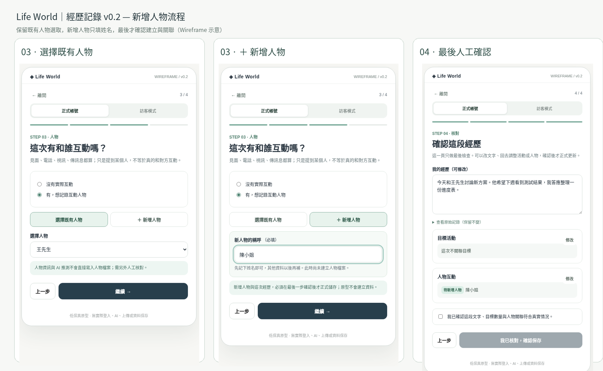
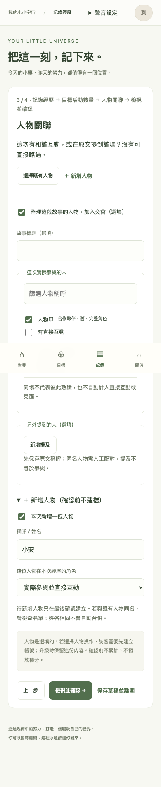
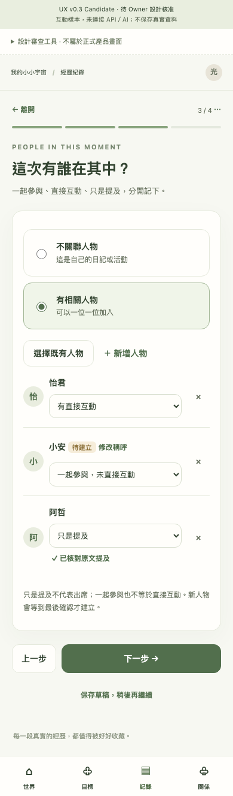

DESIGN REVIEW · CHANGES REQUESTED
從完整表單，回到一件事一步。
v0.2 是資訊架構起點；PR24 舊圖是 Owner 提供的負面參考。v0.3 仍是待核准的提案，不自稱最終設計。
操作 v0.3 Candidate · 全部390／1440畫面 · 操作原 v0.2 Wireframe
第三步：選人與分類，不是人物資料表。






第四步：先看摘要，需要才打開變更。


差異與待決事項
| 項目 | 與 v0.2 一致 | 相對舊 PR24 的差異／原因 | Owner 判斷 |
|---|---|---|---|
| 四步 | 內容 → 目標量 → 人物 → 最後確認 | 每頁一項主要任務，不把所有欄位堆在同頁。 | 資訊順序與用詞是否合適 |
| 第三步 | 可略過、選既有、只填姓名新增 | 每人一列，分類為直接互動／共同參與／只是提及；不顯示故事標題與原文索引。 | 多人操作與來源核對負擔 |
| 第四步 | 可編輯摘要、來源保留、最後人工確認 | 用短摘要區與修改入口；點人物看本次變更，沒有完整第三步表單。 | 摘要密度、抽屜／展開方式 |
| 人物資訊 | 沒有真實來源不生成正式事實 | 逐人原有資訊＋本次新增候選，逐項核對。公司／工作無保存契約時明示缺口，不假裝將保存。 | 是否要新增結構化工作／公司契約 |
| 草稿 | 保存／捨棄／繼續 | 新增獨立的「刪除已保存草稿」設計；確認、失敗、重試、版本衝突都可操作。正式 API 仍未做。 | 刪除措辭與本機素材告知 |
| 帳號身分 | 不同身分能力有別 | 移除產品「正式／訪客」雙頁籤。只呈現 Session 狀態與保存入口；舊世界登入是次要獨立流程。 | 狀態與入口是否足夠清楚 |
| 中途升級 | 保留世界與未保存內容 | 第三步同 Owner 升級只解鎖人物區，不重建整張表單；失敗／取消維持 Guest。 | 原地回饋是否清楚；真聯合驗收仍未執行 |
| 導覽／視覺 | 暖白、卡片、薄荷系元件與四主導覽 | 取目前 app/static/tokens.css 色票，手機候選導覽放文末，避免固定列覆蓋內容。僅候選，未改產品。 | 文末導覽位置是否採用 |
| AI／媒體 | 自願使用，原文保留，人工確認 | Demo 全部示意且不發網路請求。切換來源保留文字；不拿 Wireframe 假 AI 當產品能力。 | 來源與候選標示是否能理解 |
設計尚未核准。Owner 明確回覆「UX v0.3 核准」後，才依核准畫面處理 API、多人定向提交、安全草稿刪除及 PR22 聯合回歸。